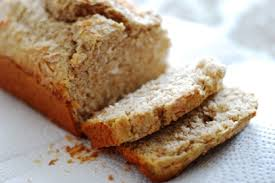

Ingredients
- 2 1/2 cups grated coconut
- 1/2 cup melted butter
- 4 cups flour
- One tablespoon shortening
- One tablespoon of baking powder
- One teaspoon salt
- 3/4 cup sugar
- 1 cup raisins
- One egg, beaten
- 1 1/4 cups evaporated milk
- One teaspoon of almond essence
Directions
- Add all the flour, baking powder, and salt to a large mixing bowl.
- Melt the butter in a saucepan.
- Mix the coconut and most of the sugar in another bowl – leave some back to cover the loaves later, raisins, egg, milk, almond essence, vanilla essence, and melted butter.
- Mix well until you have a creamy paste.
- Add this to the bowl with the flour, baking powder, and salt. Mix until you form a stiff dough.
- Now divide the mixture between the baking tins.
- Now boil the water.
- Mix two tablespoons of sugar with some hot water and brush the top of each loaf.
- Bake in the center of the oven for 1 hour.
- Leave to cool in tins before serving; slice and serve with a fresh pot of tea.